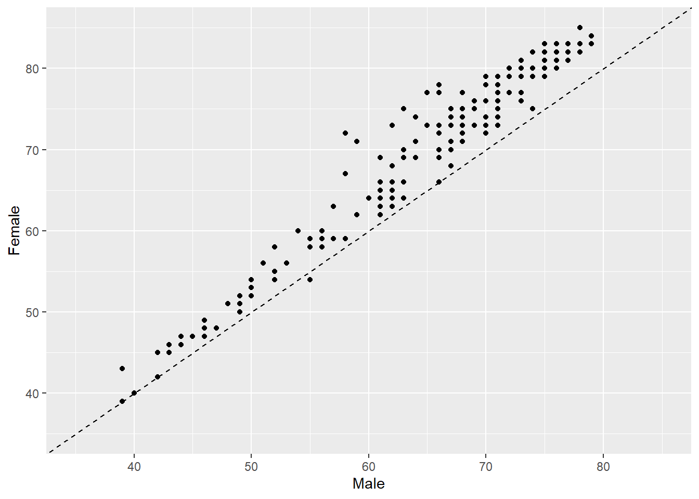
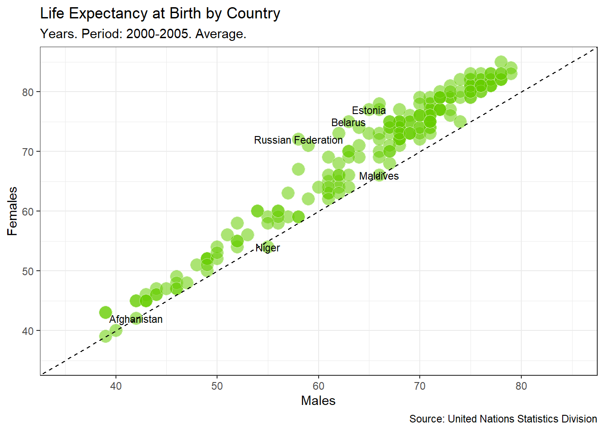

Life expectancy at birth is a measure of the average a living being is expected to live. It takes into account several demographic factors like gender, country, or year of birth.
Life expectancy at birth can vary along time or between countries because of many causes: the evolution of medicine, the degree of development of countries, or the effect of armed conflicts. Life expectancy varies between gender, as well. The data shows that women live longer that men. Why? Several potential factors, including biological reasons and the theory that women tend to be more health conscious.
Let’s create some plots to explore the inequalities about life expectancy at birth around the world. We will use a dataset from the United Nations Statistics Division, which is available here.
Code
# This sets plot images to a nice sizeoptions(repr.plot.width =6, repr.plot.height =6)# Loading packageslibrary(dplyr)
Attachement du package : 'dplyr'
Les objets suivants sont masqués depuis 'package:stats':
filter, lag
Les objets suivants sont masqués depuis 'package:base':
intersect, setdiff, setequal, union
Code
library(tidyr)library(ggplot2)# Loading datalife_expectancy <-read.csv("UNdata.csv")# Taking a look at the first few rowshead(life_expectancy)
Country.or.Area Subgroup Year
1 Afghanistan Female 2000-2005
2 Afghanistan Female 1995-2000
3 Afghanistan Female 1990-1995
4 Afghanistan Female 1985-1990
5 Afghanistan Male 2000-2005
6 Afghanistan Male 1995-2000
Source Unit Value
1 UNPD_World Population Prospects_2006 (International estimate) Years 42
2 UNPD_World Population Prospects_2006 (International estimate) Years 42
3 UNPD_World Population Prospects_2006 (International estimate) Years 42
4 UNPD_World Population Prospects_2006 (International estimate) Years 41
5 UNPD_World Population Prospects_2006 (International estimate) Years 42
6 UNPD_World Population Prospects_2006 (International estimate) Years 42
Value.Footnotes
1 NA
2 NA
3 NA
4 NA
5 NA
6 NA
2. Life expectancy of men vs. women by country
Let’s manipulate the data to make our exploration easier. We will build the dataset for our first plot in which we will represent the average life expectancy of men and women across countries for the last period recorded in our data (2000-2005).
Code
# Subsetting and reshaping the life expectancy datasubdata <- life_expectancy %>%filter(Year =="2000-2005") %>%select(Country.or.Area, Subgroup, Value) %>%spread(Subgroup, Value)# Taking a look at the first few rowshead(subdata)
A scatter plot is a useful way to visualize the relationship between two variables. It is a simple plot in which points are arranged on two axes, each of which represents one of those variables.
Let’s create a scatter plot using ggplot2 to represent life expectancy of males (on the x-axis) against females (on the y-axis). We will create a straightforward plot in this task, without many details. We will take care of these kinds of things shortly.
Code
# Plotting male and female life expectancyggplot(subdata, aes(x = Male, y = Female)) +geom_point()
4. Reference lines I
A good plot must be easy to understand. There are many tools in ggplot2 to achieve this goal and we will explore some of them now. Starting from the previous plot, let’s set the same limits for both axes as well as place a diagonal line for reference. After doing this, the difference between men and women across countries will be easier to interpret.
After completing this task, we will see how most of the points are arranged above the diagonal and how there is a significant dispersion among them. What does this all mean?
Code
# Adding an abline and changing the scale of axes of the previous plotsggplot(subdata, aes(x = Male, y = Female)) +geom_point() +geom_abline(intercept =0, slope =1, linetype =2) +scale_x_continuous(limits=c(35,85))+scale_y_continuous(limits=c(35,85))

5. Plot titles and axis labels
A key point to make a plot understandable is placing clear labels on it. Let’s add titles, axis labels, and a caption to refer to the source of data. Let’s also change the appearance to make it clearer.
Code
# Adding labels to previous plotggplot(subdata, aes(x=Male, y=Female))+geom_point(colour="white", fill="chartreuse3", shape=21, alpha=.55, size=5)+geom_abline(intercept =0, slope =1, linetype=2)+scale_x_continuous(limits=c(35,85))+scale_y_continuous(limits=c(35,85))+labs(title="Life Expectancy at Birth by Country",subtitle="Years. Period: 2000-2005. Average.",caption="Source: United Nations Statistics Division",x="Males",y="Females")
6. Highlighting remarkable countries I
Now, we will label some points of our plot with the name of its corresponding country. We want to draw attention to some special countries where the gap in life expectancy between men and women is significantly high. These will be the final touches on this first plot.
Code
# Subseting data to obtain countries of interesttop_male <- subdata %>%arrange(Male-Female) %>%head(3)top_female <- subdata %>%arrange(Female-Male) %>%head(3)# Adding text to the previous plot to label countries of interestggplot(subdata, aes(x=Male, y=Female, label=Country.or.Area))+geom_point(colour="white", fill="chartreuse3", shape=21, alpha=.55, size=5)+geom_abline(intercept =0, slope =1, linetype=2)+scale_x_continuous(limits=c(35,85))+scale_y_continuous(limits=c(35,85))+labs(title="Life Expectancy at Birth by Country",subtitle="Years. Period: 2000-2005. Average.",caption="Source: United Nations Statistics Division",x="Males",y="Females") +geom_text(data=top_male, size =3) +geom_text(data=top_female, size =3) +theme_bw()

7. How has life expectancy by gender evolved?
Since our data contains historical information, let’s see now how life expectancy has evolved in recent years. Our second plot will represent the difference between men and women across countries between two periods: 2000-2005 and 1985-1990.
Let’s start building a dataset called subdata2 for our second plot.
Code
# Subsetting, mutating and reshaping the life expectancy datasubdata2 <- life_expectancy %>%filter(Year %in%c("1985-1990", "2000-2005")) %>%mutate(Sub_Year=paste(Subgroup, Year, sep="_")) %>%mutate(Sub_Year=gsub("-", "_", Sub_Year)) %>%select(-Subgroup, -Year) %>%spread(Sub_Year, Value) %>%mutate(diff_Female = Female_2000_2005 - Female_1985_1990,diff_Male = Male_2000_2005 - Male_1985_1990 )# Taking a look at the first few rowshead(subdata2)
Country.or.Area Source
1 Afghanistan UNPD_World Population Prospects_2006 (International estimate)
2 Albania UNPD_World Population Prospects_2006 (International estimate)
3 Algeria UNPD_World Population Prospects_2006 (International estimate)
4 Angola UNPD_World Population Prospects_2006 (International estimate)
5 Argentina UNPD_World Population Prospects_2006 (International estimate)
6 Armenia UNPD_World Population Prospects_2006 (International estimate)
Unit Value.Footnotes Female_1985_1990 Female_2000_2005 Male_1985_1990
1 Years NA 41 42 41
2 Years NA 75 79 69
3 Years NA 67 72 65
4 Years NA 42 43 38
5 Years NA 75 78 68
6 Years NA 71 75 66
Male_2000_2005 diff_Female diff_Male
1 42 1 1
2 73 4 4
3 70 5 5
4 39 1 1
5 71 3 3
6 68 4 2
8. Visualize II
Now let’s create our second plot in which we will represent average life expectancy differences between “1985-1990” and “2000-2005” for men and women.
Code
# Doing a nice first version of the plot with abline, scaling axis and adding labelsggplot(subdata2, aes(x=diff_Male, y=diff_Female, label=Country.or.Area))+geom_point(colour="white", fill="chartreuse3", shape=21, alpha=.55, size=5)+geom_abline(intercept =0, slope =1, linetype=2)+scale_x_continuous(limits =c(-25, 25)) +scale_y_continuous(limits =c(-25, 25)) +labs(title="Life Expectancy at Birth by Country in Years",subtitle="Difference between 1985-1990 and 2000-2005. Average.",caption="Source: United Nations Statistics Division",x="Males",y="Females")+theme_bw()
9. Reference lines II
Adding reference lines can make plots easier to understand. We already added a diagonal line to visualize differences between men and women more clearly. Now we will add two more lines to help to identify in which countries people increased or decreased their life expectancy in the period analyzed.
Code
# Adding an hline and vline to previous plotsggplot(subdata2, aes(x=diff_Male, y=diff_Female, label=Country.or.Area))+geom_point(colour="white", fill="chartreuse3", shape=21, alpha=.55, size=5)+geom_abline(intercept =0, slope =1, linetype=2)+scale_x_continuous(limits=c(-25,25))+scale_y_continuous(limits=c(-25,25))+geom_hline(yintercept =0, linetype =2) +geom_vline(xintercept =0, linetype =2) +labs(title="Life Expectancy at Birth by Country",subtitle="Years. Difference between 1985-1990 and 2000-2005. Average.",caption="Source: United Nations Statistics Division",x="Males",y="Females")+theme_bw()
10. Highlighting remarkable countries II
As we did in the first plot, let’s label some points. Concretely, we will point those three where the aggregated average life expectancy for men and women increased most and those three where decreased most in the period.
Code
# Subseting data to obtain countries of interesttop <- subdata2 %>%arrange(diff_Male+diff_Female) %>%head(3)bottom <- subdata2 %>%arrange(-(diff_Male+diff_Female)) %>%head(3)# Adding text to the previous plot to label countries of interestggplot(subdata2, aes(x=diff_Male, y=diff_Female, label=Country.or.Area), guide=FALSE)+geom_point(colour="white", fill="chartreuse3", shape=21, alpha=.55, size=5)+geom_abline(intercept =0, slope =1, linetype=2)+scale_x_continuous(limits=c(-25,25))+scale_y_continuous(limits=c(-25,25))+geom_hline(yintercept=0, linetype=2)+geom_vline(xintercept=0, linetype=2)+labs(title="Life Expectancy at Birth by Country",subtitle="Years. Difference between 1985-1990 and 2000-2005. Average.",caption="Source: United Nations Statistics Division",x="Males",y="Females")+geom_text(data=top, size=3)+geom_text(data=bottom, size=3)+theme_bw()